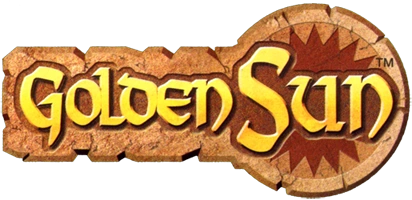
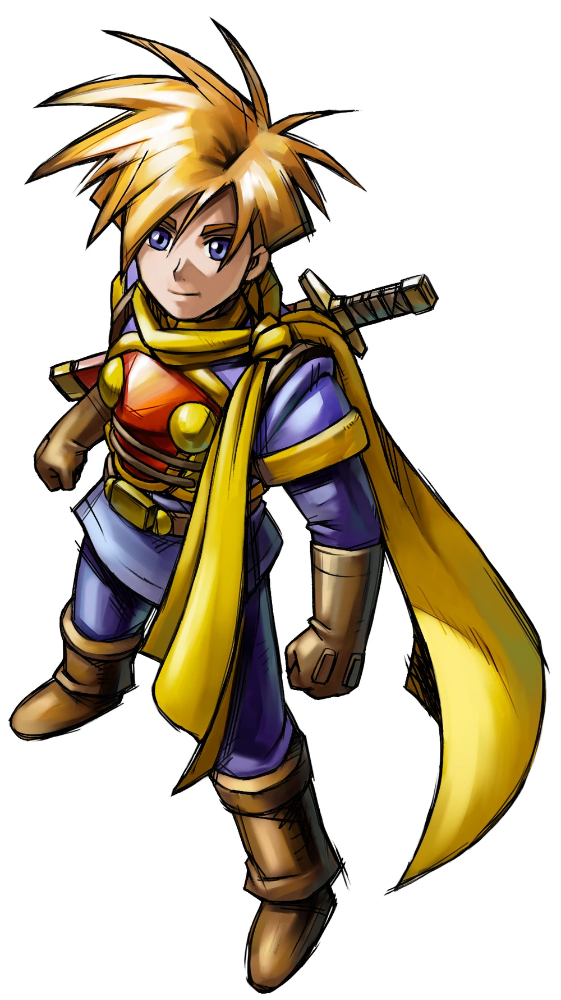
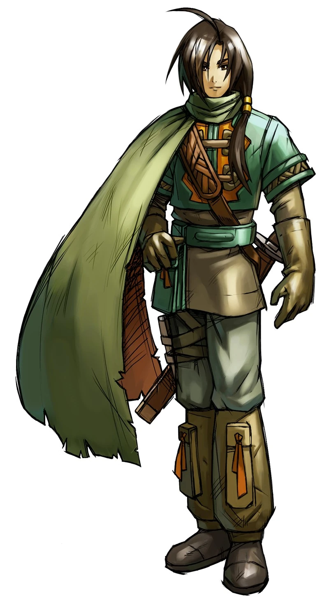
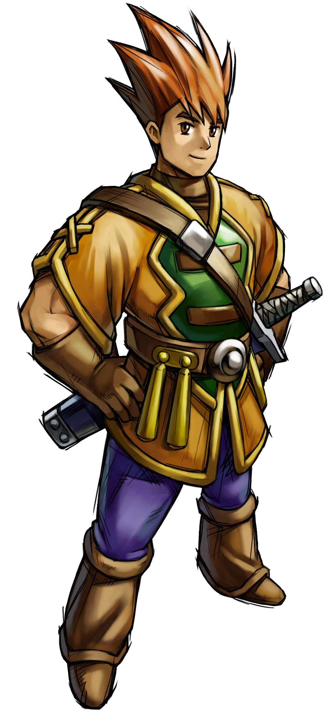
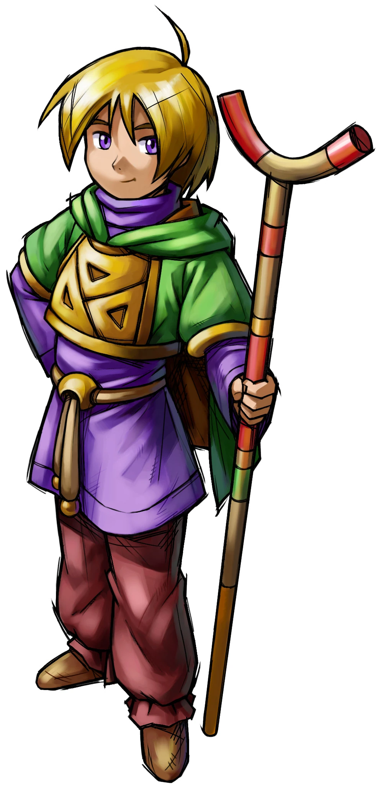
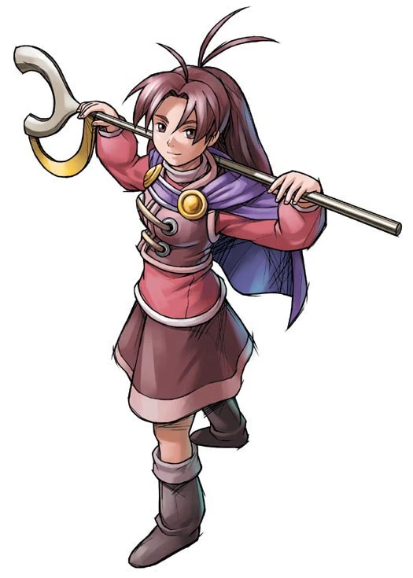
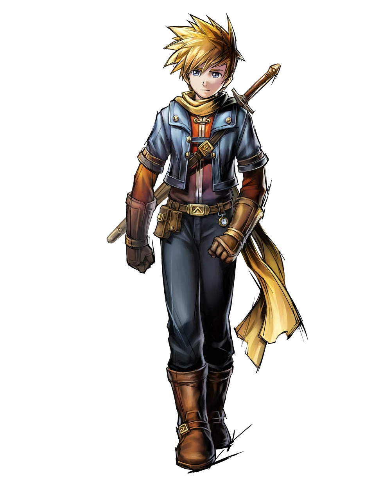
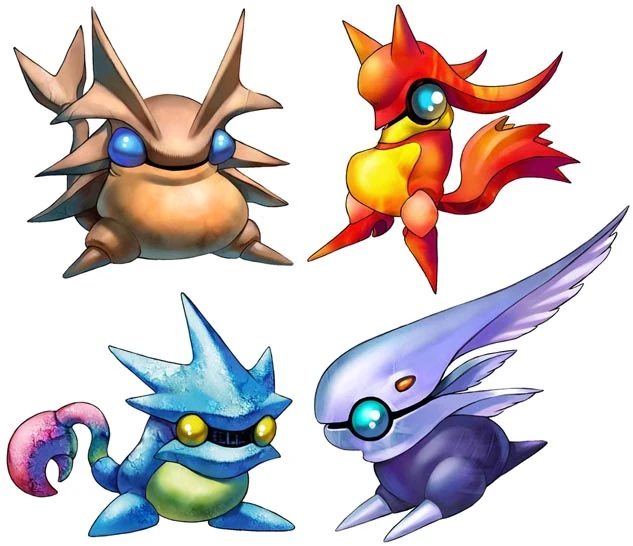

Golden Sun Story

The story follows the journey of a group of young people who discover
they have the ability to control the four elements: Earth, Fire, Water,
and Wind.
They must use their powers to stop a catastrophic event that
threatens their world.
Main Characters
- Isaac
Isaac is a Venus Adept, a playable character in Golden Sun, Golden Sun: The Lost Age and a main character in the overall Golden Sun series. He is the silent protagonist and party leader of the original Golden Sun, and gains a speaking role in his appearance late in Golden Sun: The Lost Age as a co-leader of the game's extended final party.
- Felix
Felix is a Venus Adept, and a main playable character in Golden Sun: The Lost Age. He appears in Golden Sun as a NPC in league with the game's band of antagonists opposed to Isaac, but in The Lost Age the perspective of the narrative focuses on him as the main playable character. He is the elder brother of Jenna and eventually becomes uncle of Matthew when Jenna and Isaac have a son. Felix interacts with Saturos, Menardi and Alex, three of the most powerful Adepts in all of Weyard, which gives the impression that Felix is highly proficient as an adept for the other three to accept him.
- Garet
Garet is a Mars Adept and a playable character in Golden Sun and Golden Sun: The Lost Age. He is the one who is tasked to personally accompany his closest friend, Isaac, on the latter's quest and endeavors all throughout the Golden Sun series, but is also a foil for the occasional comedy relief. He eventually becomes the father of Tyrell, a playable character in Golden Sun: Dark Dawn.
- Ivan
Ivan is a Jupiter Adept and a playable character in Golden Sun and Golden Sun: The Lost Age. As a party member, he is a mage-style Jupiter Adept who has an extremely similar successor in Sheba in the second game. He eventually fathers Karis, a playable character of Golden Sun: Dark Dawn. Ivan is highly tuned to his element, Jupiter. At the age of 14 he was considered the most gifted Jupiter adept in all of Weyard, with the potential to be more powerful than his sister, Hama.
- Jenna
Jenna is a Mars Adept and a playable guest character in Golden Sun who becomes a main playable character in Golden Sun: The Lost Age. A childhood friend of Isaac and Garet's and the younger sister of Felix, She, along with Kraden, are kidnapped early on the first game. Being the only mage-style Mars Adept in either game makes her default class series the Flame User class series. Jenna eventually marries Isaac and has a son, Matthew, the main playable character in Golden Sun: Dark Dawn. Jenna is part of an elite group of powerful Fire Adepts including Garet, Eoleo, and Tyrell. Jenna is probably the most technically gifted fire adept in Golden Sun, only behind Saturos and Menardi.
- Matthew
Matthew is the main playable character of Golden Sun: Dark Dawn. He is the son of Isaac and Jenna, and is a Venus Adept like his father.






Main Gameplay Features
- Turn based classic RPG
- Elemental system utilizing collectable Djinn.
- Multiple character party system.
- Over world puzzle solving.
Meet the Djinn!
Djinn are the elemental entities that bolster the Psynergy capabilities of the Adepts.
The singular form of Djinn is Djinni. They originated from Mt. Aleph and were spread across Weyard when the mountain erupted.
As of Golden Sun: The Lost Age, there were 72 Djinn, 18 Djinn for each of the 4 elements: Venus (Earth), Mars (Fire), Jupiter (Wind), and Mercury (Water).
While some Djinn are easily seen within towns and caves, others are hidden on the overworld map and can only be obtained in a random encounter. The player can get Djinn either by defeating them in battle, or by receiving them from various game events.
The Djinn system of gameplay was a highly discussed subject of various reviewers reviewing Golden Sun and The Lost Age.
